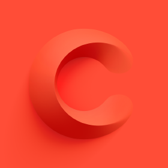

I am a machine learning engineer currently focused on building self-driving cars at Cruise. Past includes: Stanford B.S./M.S. in Computer Science, MLE @ LinkedIn, and a lot of water polo.
2019 - Present
 I am an ML Engineer at Cruise, where I have worked on two primary domains: trajectory prediction and trajectory planning. I spent the first couple of years here focused on trajectory prediction. You can see some highlights in this blog post.
After that, I transitioned and have been focused on trajectory planning and scoring of AV behavior. We leverage a variety of ML based tools in the supervised learning domains as well as the reinforcement learning domains.
Throughout 2022 and 2023, we deployed a real fleet of autonomous vehicles for a production ridehail service in San Francisco, Phoenix, and Austin. We have since scaled down our fleet due to the announcements here while we refocus on safe and reliable deployment.
2017 - 2019
 I was an ML Engineer at LinkedIn, where I worked on some of LinkedIn’s machine learning infrastructure tooling. I was specifically focused on training tooling to service some of LinkedIn’s common data formats and models described in this paper: GLMix: Generalized Linear Mixed Models For Large-Scale Response Prediction.
I was an ML Engineer at LinkedIn, where I worked on some of LinkedIn’s machine learning infrastructure tooling. I was specifically focused on training tooling to service some of LinkedIn’s common data formats and models described in this paper: GLMix: Generalized Linear Mixed Models For Large-Scale Response Prediction.
2016 - 2017

Completed my MS in Computer Science following the Artificial Intelligence track. I took several of the very famous Stanford AI/ML courses like CS221, CS224n, CS231n, CS228, etc. Some examples of my class projects include: a rough re-implementation of an IBM published paper on bidirectional attention mechanisms for machine translation (my class project is here: Bifocal Perspectives for Machine Comprehension), as well as a semantic segmentation model for histological breast cancer images (class project is here: Semantic Segmentation with Histological Image Data: Cancer Cell vs. Stroma).
I also was a TA for Percy Liang’s CS221 class in the fall of 2016.
2012 - 2016
Completed my undergraduate BS degree in Computer Science following the Artificial Intelligence track. I took Andrew Ng’s seminal course CS229 titled “Introduction to Machine Learning” which sparked my interested in the broad field of AI and neural network based approaches to problem solving.
I also was a 4-year member of the varsity water polo team. I played water polo from a young age, and was lucky enough to compete at the highest collegiate level. I was also selected to play on the youth and junior national teams, which allowed me to compete at various international tournaments across the world. You can read more about my playing career on Stanford’s website.